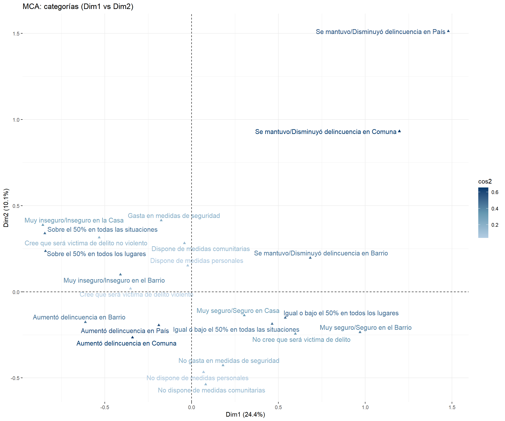
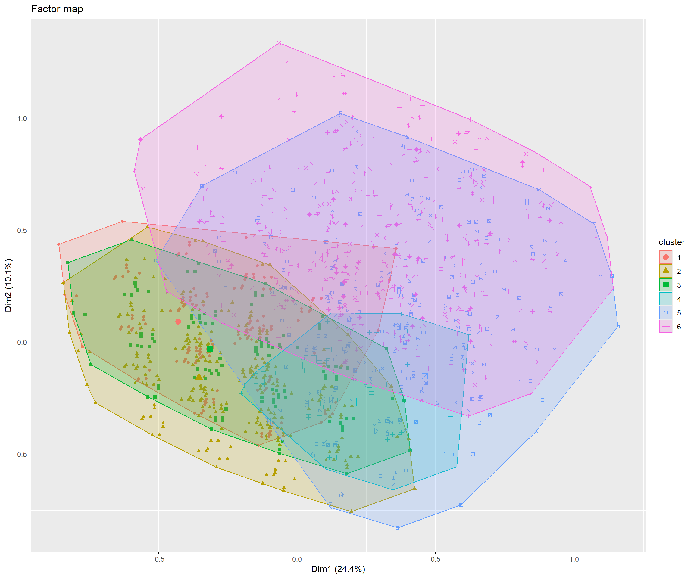
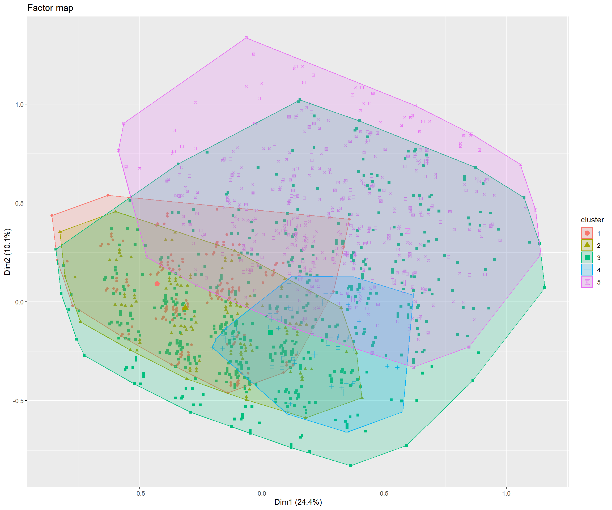
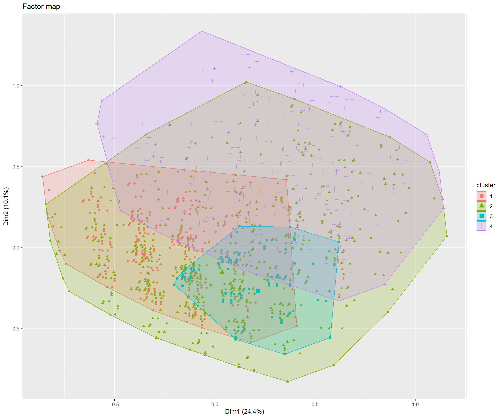
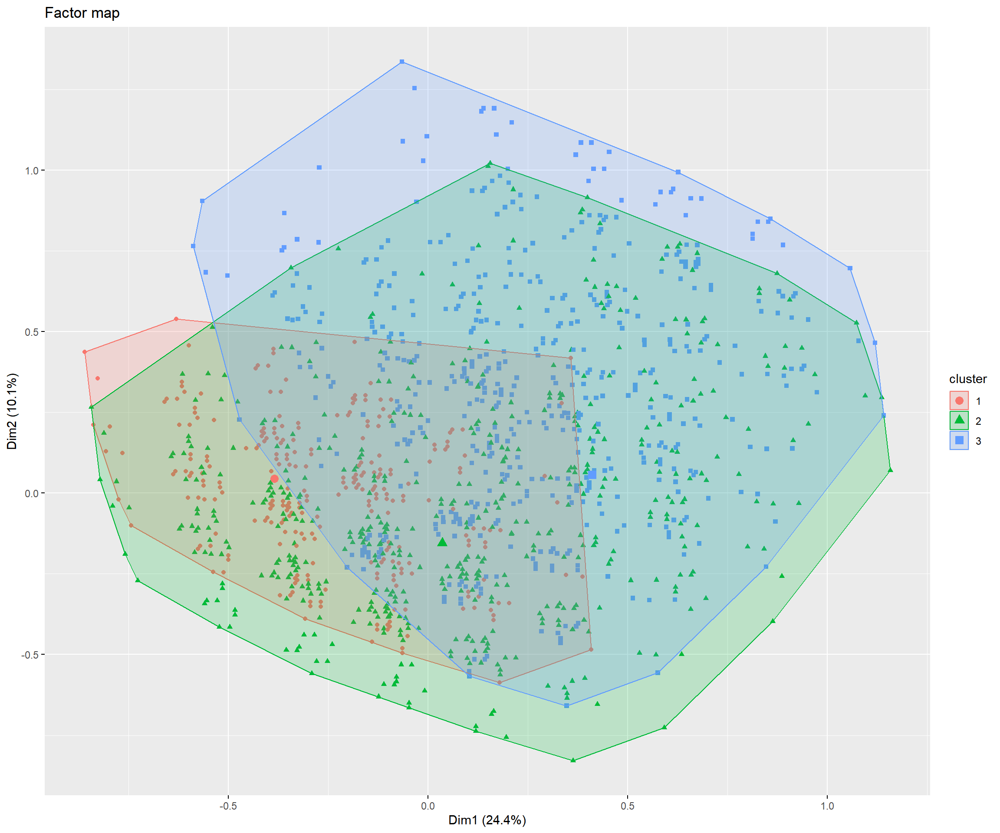
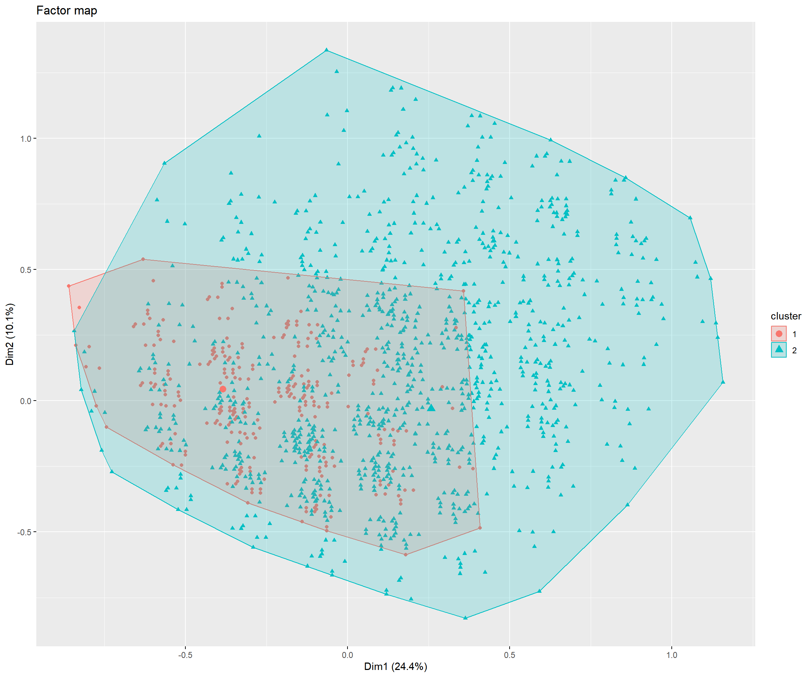

 Análisis MCA y HCPC ENUSC
Análisis MCA y HCPC ENUSC
Introducción
Este documento…
Tablas

El cluster 1 se caracteriza por una sobrerepresentación de: Dispone de medidas personales (v_test = ); Aumentó delincuencia en Comuna (v_test = ) and Cree que será victima de delito no violento (v_test = )
El cluster 2 se caracteriza por una sobrerepresentación de: No dispone de medidas personales (v_test = ); Aumentó delincuencia en Comuna (v_test = 26.06) and Sobre el 50% en todos los lugares (v_test = 21.21)
El cluster 3 se caracteriza por una sobrerepresentación de: Cree que será victima de delito violento (v_test = ); Dispone de medidas personales (v_test = 33.81) and Aumentó delincuencia en Comuna (v_test = 31.64)
El cluster 4 se caracteriza por una sobrerepresentación de: No cree que será victima de delito (v_test = ); Dispone de medidas personales (v_test = 35.77) and Igual o bajo el 50% en todos los lugares (v_test = 32.86)
El cluster 5 se caracteriza por una sobrerepresentación de: No dispone de medidas personales (v_test = ); Igual o bajo el 50% en todos los lugares (v_test = 26.06) and Igual o bajo el 50% en todas las situaciones (v_test = 24.12)
El cluster 6 se caracteriza por una sobrerepresentación de: Se mantuvo/Disminuyó delincuencia en Barrio (v_test = ); Se mantuvo/Disminuyó delincuencia en Comuna (v_test = ) and Se mantuvo/Disminuyó delincuencia en País (v_test = )

El cluster 1 se caracteriza por una sobrerepresentación de: Dispone de medidas personales (v_test = ); Aumentó delincuencia en Comuna (v_test = ) and Cree que será victima de delito no violento (v_test = )
El cluster 2 se caracteriza por una sobrerepresentación de: Cree que será victima de delito violento (v_test = ); Dispone de medidas personales (v_test = 33.81) and Aumentó delincuencia en Comuna (v_test = 31.64)
El cluster 3 se caracteriza por una sobrerepresentación de: No dispone de medidas personales (v_test = ); No dispone de medidas comunitarias (v_test = 4.69) and Muy seguro/Seguro en el Barrio (v_test = 4.21)
El cluster 4 se caracteriza por una sobrerepresentación de: No cree que será victima de delito (v_test = ); Dispone de medidas personales (v_test = 35.77) and Igual o bajo el 50% en todos los lugares (v_test = 32.86)
El cluster 5 se caracteriza por una sobrerepresentación de: Se mantuvo/Disminuyó delincuencia en Barrio (v_test = ); Se mantuvo/Disminuyó delincuencia en Comuna (v_test = ) and Se mantuvo/Disminuyó delincuencia en País (v_test = )

El cluster 1 se caracteriza por una sobrerepresentación de: Dispone de medidas personales (v_test = ); Sobre el 50% en todas las situaciones (v_test = ) and Aumentó delincuencia en Comuna (v_test = )
El cluster 2 se caracteriza por una sobrerepresentación de: No dispone de medidas personales (v_test = ); No dispone de medidas comunitarias (v_test = 4.69) and Muy seguro/Seguro en el Barrio (v_test = 4.21)
El cluster 3 se caracteriza por una sobrerepresentación de: No cree que será victima de delito (v_test = ); Dispone de medidas personales (v_test = 35.77) and Igual o bajo el 50% en todos los lugares (v_test = 32.86)
El cluster 4 se caracteriza por una sobrerepresentación de: Se mantuvo/Disminuyó delincuencia en Barrio (v_test = ); Se mantuvo/Disminuyó delincuencia en Comuna (v_test = ) and Se mantuvo/Disminuyó delincuencia en País (v_test = )

El cluster 1 se caracteriza por una sobrerepresentación de: Dispone de medidas personales (v_test = ); Sobre el 50% en todas las situaciones (v_test = ) and Aumentó delincuencia en Comuna (v_test = )
El cluster 2 se caracteriza por una sobrerepresentación de: No dispone de medidas personales (v_test = ); No dispone de medidas comunitarias (v_test = 4.69) and Muy seguro/Seguro en el Barrio (v_test = 4.21)
El cluster 3 se caracteriza por una sobrerepresentación de: Dispone de medidas personales (v_test = ); Igual o bajo el 50% en todas las situaciones (v_test = ) and Se mantuvo/Disminuyó delincuencia en Comuna (v_test = )

El cluster 1 se caracteriza por una sobrerepresentación de: Dispone de medidas personales (v_test = ); Sobre el 50% en todas las situaciones (v_test = ) and Aumentó delincuencia en Comuna (v_test = )
El cluster 2 se caracteriza por una sobrerepresentación de: No dispone de medidas personales (v_test = ); Igual o bajo el 50% en todas las situaciones (v_test = ) and Se mantuvo/Disminuyó delincuencia en Comuna (v_test = )